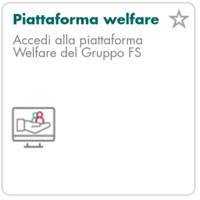
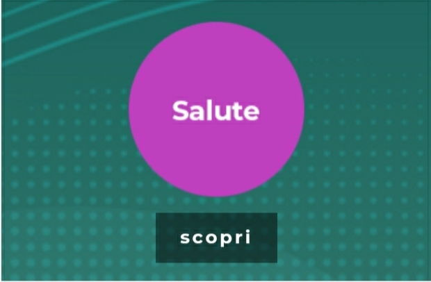
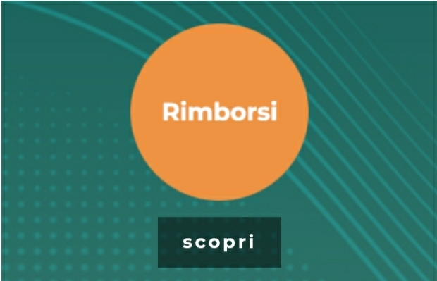
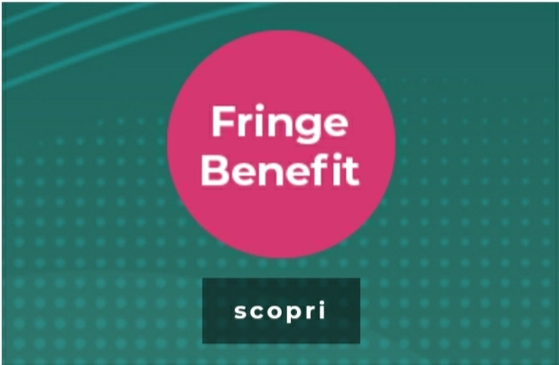
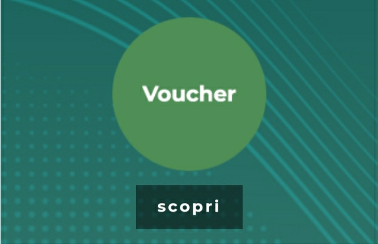
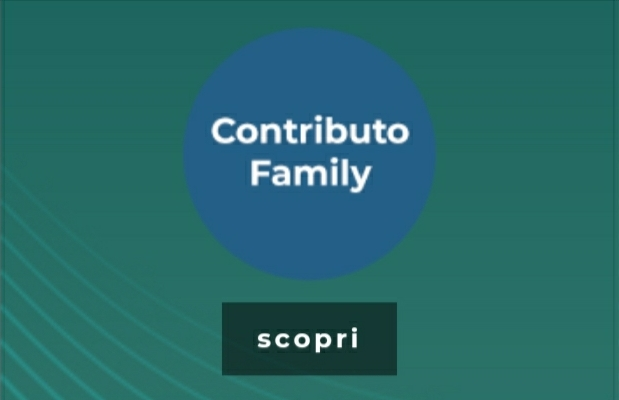

Per destinare il PDR al welfare occorre entrare nella propria area self-service e cliccare nella tile piattaforma welfare. Si aprirà l'home page del portale welfare del gruppo.

Quali sono le forme di welfare?
Ci sono diverse possibilità con finalità di educazione, istruzione, ricreazione e assistenza sociale e sanitaria.
Il PDR destinato al welfare può essere versato integralmente o in parte al fondo eurofer.
Il PDR destinato al welfare, se non integralmente utilizzato, verrà automaticamente conferito nel fondo eurofer.

È possibile acquistare consulenze mediche in presenza o a distanza, test genetici, check-up, fisioterapia, visite specialistiche, ecc.

Sezione dedicata ai rimborsi per:
1. Spese di istruzione (testi scolastici, vacanze studio, campus, ludoteche, asilo nido, scuola materna, università, master, mensa scolastica, gite scolastiche, scuolabus, pre/dopo scuola).
2. Servizi di assistenza (baby sitting, assistenza anziani).

Non concorrono a formare il reddito da lavoro dipendente (ex art.51 del TIUR) e sono esenti dalla tassazione fino al limite di 3.000 € per l'anno fiscale 2023 solo per i dipendenti con figli a carico (DL 48/2023 DL LAVORO, qualora dovesse essere convertito in legge senza modifiche). Per tutti gli altri lavoratori il limite è fissato a 258,23 € e il limite fiscale utilizzabile è pari a 50 € in quanto la valorizzazione della CLC rientra tra i fringe benefit ed ha

Worklife balance:
1. Servizi alla persona (assistenza a disabili e anziani, ripetizioni e baby sitting per bambini e ragazzi, consulenza pensioni).
2. Servizi per la casa (consulenza per educazione domestica sostenibile).

È un contributo aziendale del valore di 300 € per il rimborso delle spese sostenute per asili nido, vacanze studio, campus, ludoteche, servizi di baby sitting per i figli e servizi di assistenza per i familiari anziani o non autosufficienti. Si trova nella sezione dedicata ai rimborsi ed è contrassegnato dal bollino blu.

Tempo libero:
1. Viaggi e divertimento (sconti tour operator e pacchetti viaggio).
2. Sport e benessere (pacchetti percorsi termali e benessere, palestre, piscine).
3. Cultura e formazione (corsi di lingua, editoria,

Il pacchetto FS FAMILY è l'estensione al nucleo familiare delle prestazioni incluse nel PACCHETTO FS SALUTE. L'adesione deve riguardare necessariamente tutti i componenti del nucleo familiare.
Sono previste 2 campagne di acquisto massive: dal 1 gennaio al 28 febbraio (con decorrenza 1 gennaio e dal costo di 500 €) e dal 1 luglio al 31 agosto (con decorrenza 1 luglio e dal costo di 250 €). Se il PDR verrà destinato all'acquisto del PACCHETTO FS FAMILY potrà essere utilizzato esclusivamente nella seconda campagna